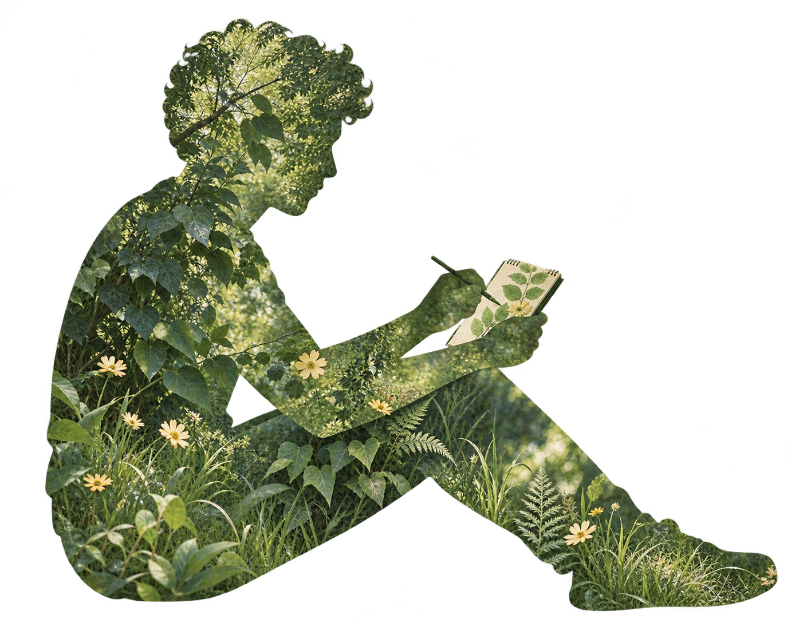
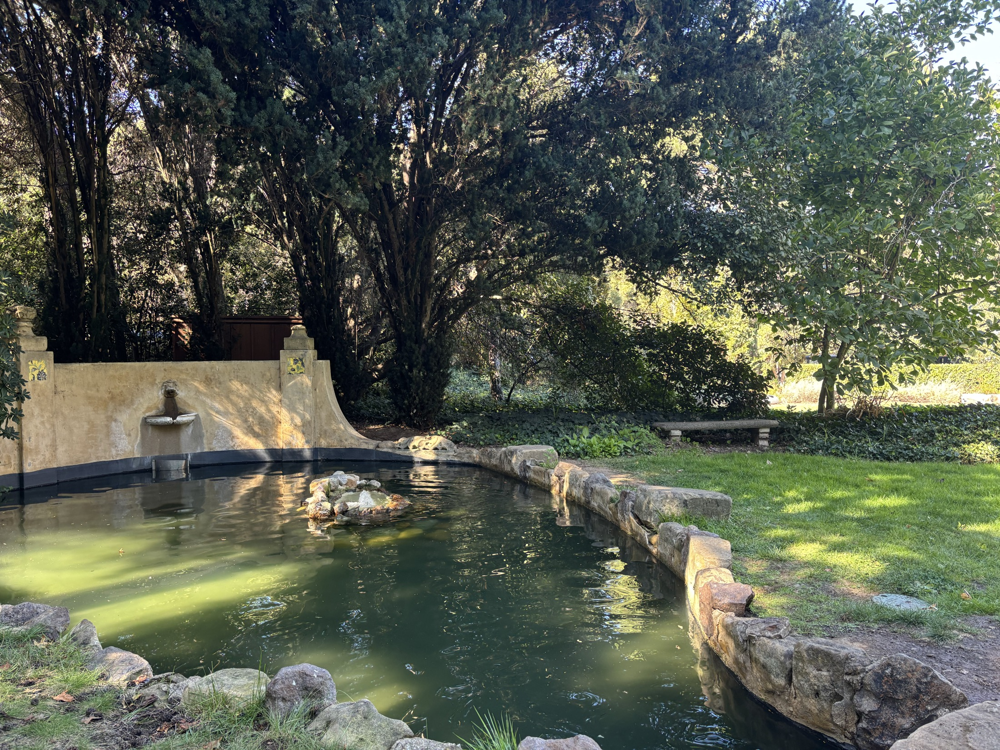

Find your little escape.
Explore places where others have made art. Find a spot that inspires you, and take a moment to settle into the world outside.

A little paint. A little fresh air.
Something just for you.
A creative break is closer than you think.
A phone case with built-in paints and a brush, paired with a companion app, makes it easy to take creative breaks outdoors. Discover places where others have made art, follow a prompt or create freely, and share anonymously.
Stamps · our proposed concept for CS 147.

Reconnect with the joy of making for yourself, without the pressure of a “good” artistic outcome.
Explore places where others have made art. Find a spot that inspires you, and take a moment to settle into the world outside.
Reach for the paints and brush in your phone case. Follow a prompt or create freely on seed paper. There’s no right way to make your mark.
Create ephemeral art, then plant your work. Share anonymously in the companion app and build a personal map of the places that inspire you.
A field journal of our design process.
More to come as the project grows.
We’ll begin with conversations and observations to understand how people make time for creativity, reconnect with nature, and experience pressure around making art.
Interview notes and findings will be added here.
Small experiments will help us explore the paint-filled phone case, seed-paper art, and outdoor creative breaks.
Prototype materials and reflections will be added here.
We’ll turn what we learn into an interface, test it with people, and refine the experience one iteration at a time.
Sketches, testing, and final project links will be added here.
We’re a CS 147 project team designing Stamps: a small invitation to get outside, make something, and enjoy the process.
Team profiles are placeholders, ready for your names, photos, and bios.